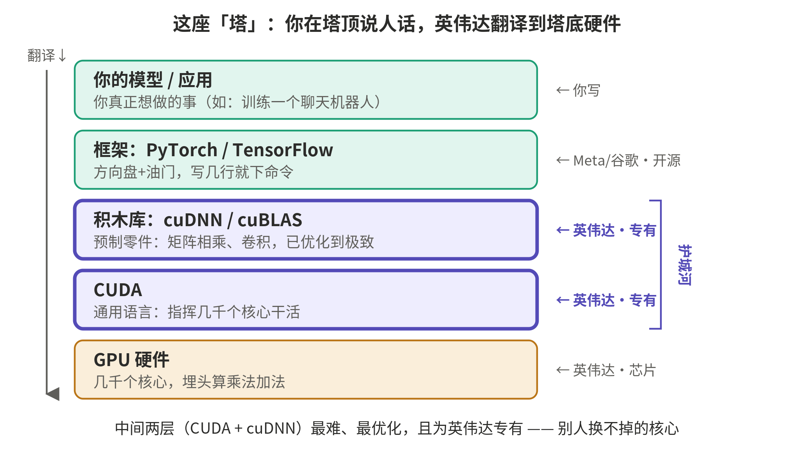
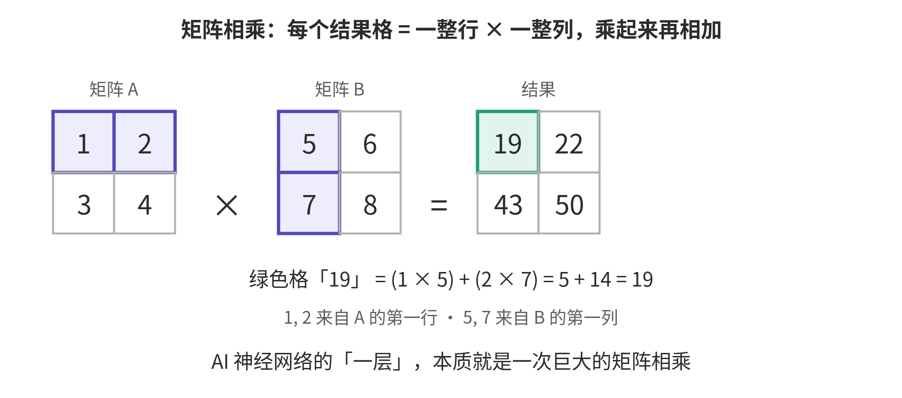
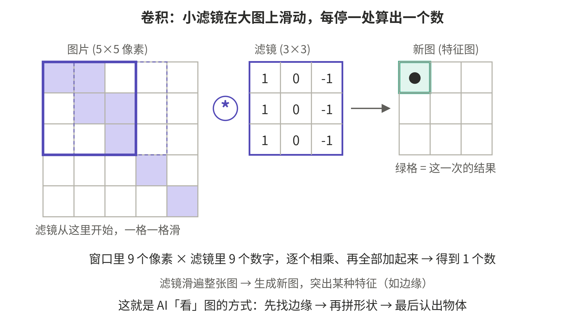
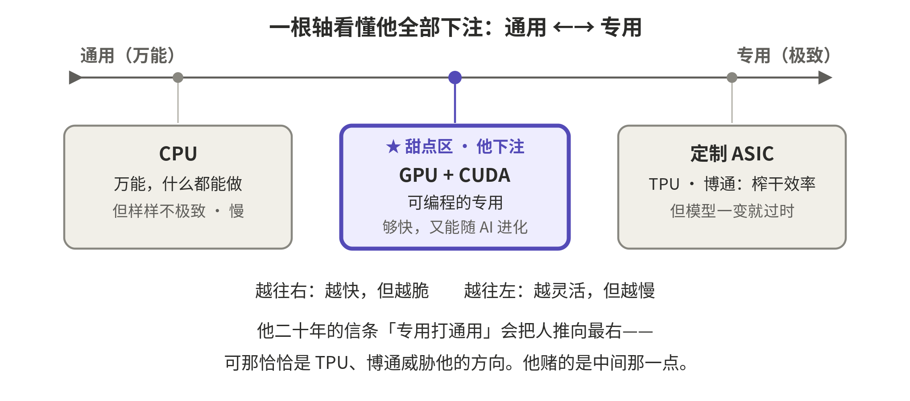
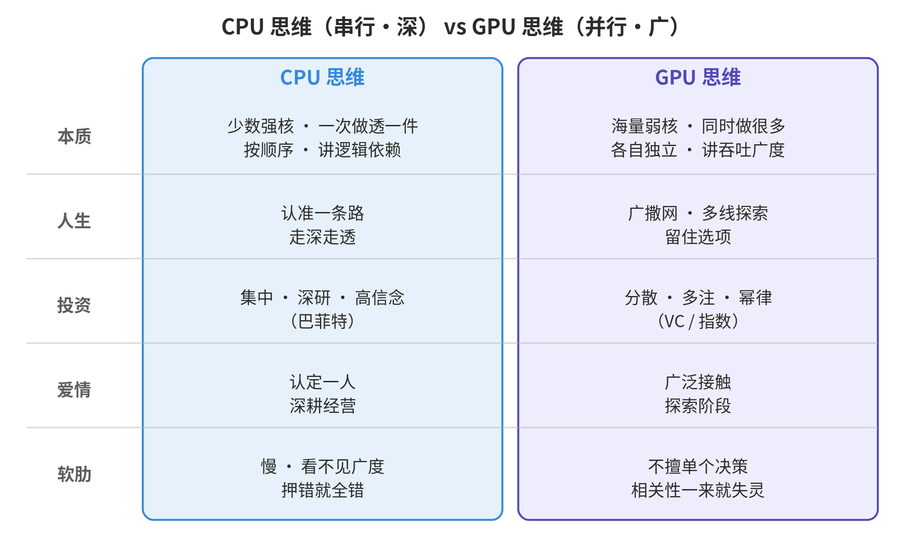
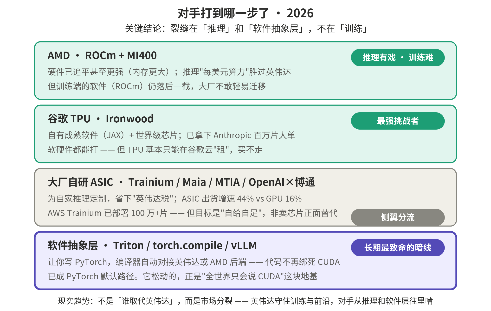
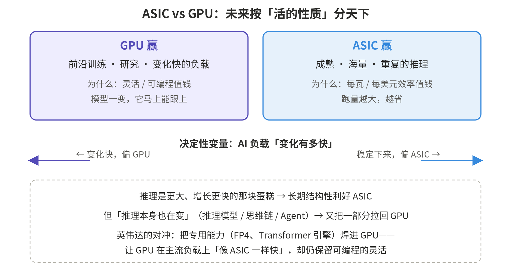
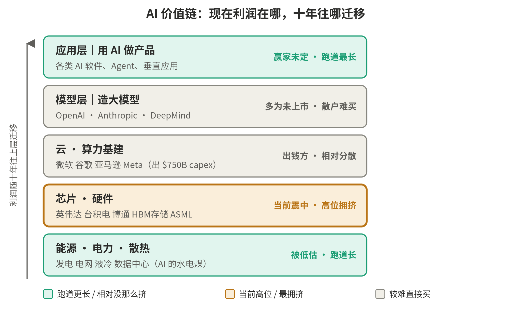

英伟达与 AI 时代
从 GPU、CUDA 到护城河的全景笔记
一份"费曼小白"式的系统梳理
为什么它牛 · 壁垒在哪 · 路线之争 · 普通人如何参与
整理日期：2026 年 6 月
导读
这份文档把一整场对话里探讨过的所有知识点，重新梳理成一条有逻辑的主线，沉淀下来方便回看。它不按聊天的先后顺序，而是从"英伟达为什么牛"出发，一层层往下挖：它到底做什么、壁垒究竟在哪、CUDA 这套软件生态如何用大白话理解、黄仁勋的远见从何而来、这套打法如何被复制到机器人和物理世界，再延伸到一个有趣的思想实验（CPU 思维 vs GPU 思维），最后落到最现实的两个问题——护城河会不会被攻破，以及普通人在这波浪潮里该怎么参与。
讲解风格沿用"费曼小白"原则：每个概念先用大白话和比喻讲清"是什么、为什么"，再上数据和术语；适合对比的地方用表格或图来呈现。文中出现的具体数据与事实都标注了来源（页脚脚注），图表则嵌在它所解释的那段文字旁边。需要提醒的是：截至整理时点（2026 年 6 月）的市场数据会随时间变化，投资相关内容仅为思考框架，并非投资建议。
目录
第一部分 英伟达为什么是 AI 时代的霸主
1.1 它到底做什么：早已不只是卖 GPU
1.2 护城河的三层结构
第二部分 与博通、Marvell 之争：壁垒到底在哪
2.1 芯片设计有门槛，但不是英伟达独有的壁垒
2.2 两种生意：商品芯片（Merchant）vs 定制芯片（ASIC）
2.3 "卖系统"不是差异化：真正的区别是卡脖子层与商业模式
2.4 两种"连接"：scale-up 与 scale-out；NVLink Fusion 与 UALink
第三部分 CUDA 与软件生态：护城河的真正核心
3.1 CUDA 是什么
3.2 GPU 原本只会画图：CUDA 的伟大发明
3.3 那座"软件塔"：从硬件到你的应用
3.4 为什么换不动：比微信更黏，以及 App Store 类比
3.5 看懂两个底层动作：矩阵相乘与卷积
3.6 框架是什么：PyTorch 与 TensorFlow
第四部分 黄仁勋的远见：看见，然后敢错十年
4.1 他凭什么能预见"大规模并行计算"会重要
4.2 真正稀缺的另一半：敢错十年
4.3 看对方向 vs 接住运气
第五部分 同一套逻辑的放大：机器人、物理 AI 与"专用打通用"
5.1 "三台计算机"
5.2 Isaac / GR00T = 机器人界的 CUDA；AI 工厂
5.3 通用 vs 专用：他下注的"甜点区"
第六部分 CPU 思维 vs GPU 思维：迁移到人生、投资与爱情
6.1 两种思维的本质
6.2 AI 是 GPU 思维，人是两者兼有
6.3 对照表与"切换时机"
第七部分 竞争格局与护城河的命运
7.1 对手打到哪一步了
7.2 ASIC vs GPU 路线之争：按负载分天下
7.3 护城河会不会破？哪一层先破
7.4 牛熊两种声音与该盯的裂缝信号
第八部分 普通人如何在 AI 浪潮中受益（投资视角）
8.1 先纠正一个事实：近一年并没"暴涨二十倍"
8.2 AI 价值链分层地图
8.3 长视野的几条原则
8.4 风险点与免责声明
附录 主要数据与来源
第一部分 英伟达为什么是 AI 时代的霸主
1.1 它到底做什么：早已不只是卖 GPU
很多人对英伟达的第一印象是"做 GPU 设计的"。这没错——它是一家芯片设计公司（Fabless，自己不建厂，把芯片交给台积电代工）。但它早就不只卖一颗 GPU 了。它卖的是一整套"AI 计算系统"：芯片（H100、B200 等）+ 芯片之间的高速互联（NVLink、NVSwitch）+ 整机柜服务器（如 GB200 NVL72）+ 网络（收购 Mellanox 而来的 InfiniBand）+ 一整套软件栈。换句话说，它现在更像是卖"AI 数据中心"的供应商，而不是卖显卡的。
这一点很关键：理解英伟达，不能只盯着那颗芯片，要看它把芯片、互联、网络、软件捆成一个别人很难绕开的"标准"。
1.2 护城河的三层结构
英伟达真正的壁垒不在硅片本身，而在它周围那一整套东西。可以拆成三层，从最关键到次之：
第一层，也是最核心的，是 CUDA 软件生态。这是 2006 年就开始铺的。全世界做 AI、做科学计算的人，十几年来写的代码、训练框架（PyTorch、TensorFlow）、各种算子库、几百万开发者的肌肉记忆，全都建立在 CUDA 之上。你买了别家更便宜的芯片，但模型在上面跑不起来、或要花几个月重写适配、性能还差一截，那"便宜"就没意义了。这是典型的"换不动"——不是技术上不可逾越，而是整个生态的迁移成本太高。芯片可以被超越，生态很难。
第二层是系统级整合，尤其是互联。训练大模型不是靠一颗芯片，而是靠成千上万颗芯片像一台机器一样协同工作。芯片再快，如果它们之间的数据传输是瓶颈，整体就慢。英伟达的 NVLink 让 GPU 之间直接高速通信，Mellanox 的网络让机柜之间高速通信。这套"把几万张卡黏成一台超级计算机"的能力，单独设计一颗芯片解决不了。
第三层才是芯片本身 + 迭代节奏。它确实设计得好，而且现在基本一年一代（Hopper → Blackwell → Rubin），逼着对手永远在追一个移动的靶子。
一句话：芯片设计门槛高，但不是英伟达独有；英伟达真正独有的，是花了近二十年才攒出来、别人砸钱也很难短期复制的软件生态和系统整合。这才是它能赚到那么高毛利的原因。
第二部分 与博通、Marvell 之争：壁垒到底在哪
2.1 芯片设计有门槛，但不是英伟达独有的壁垒
一个常见的疑问：博通、Marvell 不也能设计芯片吗？能，但它们做的是不同的生意。芯片设计的门槛确实很高，但这个门槛并非英伟达专属——所以"会设计芯片"本身，并不能解释英伟达的护城河。要害在于：它们设计的是什么芯片、用什么商业模式、占住了价值链的哪一层。
2.2 两种生意：商品芯片（Merchant）vs 定制芯片（ASIC）
博通、Marvell 在 AI 上做的主要是 ASIC（定制专用芯片）——比如帮谷歌设计 TPU、帮亚马逊设计 Trainium。这种模式与英伟达的"商品芯片"模式，是两套完全不同的逻辑：
| 维度 | 英伟达（GPU / 商品芯片） | 博通 · Marvell（ASIC / 定制设计） |
| 产品形态 | 一款通用 GPU，摆上货架卖给所有人 | 为单一大客户定制的专用芯片 |
| 架构定义权 | 英伟达自己掌握 | 在客户手里（谷歌、亚马逊定义架构） |
| 软件栈 | CUDA，自有且全行业通用 | 客户自带（如谷歌为 TPU 自研整套软件） |
| 通用性 | 高，谁都能用、什么任务都能跑 | 低，只为某客户某类任务优化 |
| 护城河归谁 | 英伟达自己 | 主要留在客户手里，博通收设计服务费 |
| 怎么卖 | 面向几百万开发者的公开市场 | 面向少数超级大客户，更像"设计院" |
有个反直觉的结论：论"纯卖芯片"，英伟达反而比博通更纯。英伟达是把一款产品卖给所有人（merchant 模式）；而博通根本不在公开市场卖芯片，它是给少数大客户做定制的设计代工，谷歌也不把 TPU 卖给你，只在自家云上出租。大厂搞自研 ASIC，图的就是绕开"英伟达税"，但代价是放弃通用性和 CUDA 生态、自己扛软件。
2.3 "卖系统"不是差异化：真正的区别是卡脖子层与商业模式
一个尖锐的反驳是：现在大家都做"全栈"——博通也做机柜、做网络、做软件；AMD 买了 ZT Systems 做整机柜。所以"卖一整套系统"已经不是谁的独门绝技。这话是对的。差异化不在"系统 vs 芯片"这个维度上，而在两件事：
其一，你掌握的是哪一层的"卡脖子点"，以及它能不能被换掉。光"能拼出全栈"不值钱，值钱的是你独占了别人换不掉的那几层。英伟达同时卡住三层：通用 GPU（算力）+ CUDA（软件）+ NVLink（scale-up 互联）。博通卡的是另一层——以太网交换芯片（scale-out 网络），那一层它确实强、也确实在分英伟达蛋糕，但它没有一颗谁都能买的通用 GPU，也没有 CUDA。两家都做"全栈"，但占据的卡脖子层不同，英伟达占的那几层迁移成本更高。
其二，商业模式不同（见 2.2 的表）。所以更准确的说法不是"英伟达从卖芯片升级成了卖数据中心"，而是：所有人都在卖系统，但英伟达独占了算力 + 软件 + scale-up 这三层互相加固的卡脖子点，而且是用一款人人可买的商品化产品占住的；博通强，但强在另一层（网络），且做的是替客户定制、护城河留在客户手里的生意。
2.4 两种"连接"：scale-up 与 scale-out；NVLink Fusion 与 UALink
GPU 之间的连接其实分两层，一定要拆开看。一层叫 scale-up（纵向扩展）：把几十颗 GPU 紧紧绑成"一颗超级大 GPU"，让它们像一块芯片一样协同、共享显存。这就是 NVLink 干的事，技术很硬，且为英伟达私有。另一层叫 scale-out（横向扩展）：把很多个这样的"超级 GPU"再用网络连成上万卡的集群，走的是以太网或 InfiniBand——这一层才是博通的主场，而且正走向开放和标准化。
那能不能买博通的芯片、再插上 NVLink 来连？历史上 NVLink 是完全封闭的——不卖、不授权，你想要 NVLink 级别的 scale-up，就必须全套买英伟达。2025 年 Computex 上英伟达推出 NVLink Fusion，表面"开放"，但细看条款：只授权较慢的版本，最快的 NVLink 5 不授权、仅以"芯片粒"提供，且只有当方案里包含一颗英伟达 GPU 或 CPU 时才让你用1。业内直接称之为"收费站"。作为反制，AMD、英特尔、谷歌、微软、博通联合推出开放标准 UALink，目标是做一个不受英伟达控制的 scale-up 互联2。这场仗现在才刚开打。
顺带一提：GB200 NVL72 这种整机柜的物理组装其实不值钱，真正拧螺丝的是富士康、广达这些 ODM3，英伟达自己不组装。难度"搬进"了机柜里——是 NVLink 把 72 颗 GPU 在一个机柜内做成了一个统一算力域，这属于芯片级设计，机柜只是它的物理外壳。
第三部分 CUDA 与软件生态：护城河的真正核心
3.1 CUDA 是什么
CUDA 全称 Compute Unified Device Architecture（统一计算设备架构），2006 年推出。名字不重要，重点是它干的事：它是"和 GPU 对话、指挥那几千个核心干活"的语言和工具。
先把硬件说清楚。一颗 GPU，本质上是几千上万个小计算器（核心）挤在一块芯片上：单个核心不聪明，但数量极多，能同时算几千道小学算术题。而 AI（神经网络）训练，本质就是海量的乘法加法——几十亿次"两个数相乘再相加"。这种活儿 CPU 不擅长（核心少、一道道排队算），GPU 却能一口气并行算几千道，所以快得离谱。这就是 GPU 是 AI 命根子的原因。
3.2 GPU 原本只会画图：CUDA 的伟大发明
问题是：硬件不会自己动。你不能对着芯片喊"帮我把这一亿个数乘起来"，得用某种"语言"告诉它：第 1 个核心算这一块、第 2 个核心算那一块、算完怎么拼回来。这个语言就是 CUDA。
有个历史细节能让人瞬间懂它的价值：2006 年之前，GPU 是只会画图的（它本来是给游戏渲染画面的）。你想拿它算数学，得把数学题伪装成一道画图题，去骗图形接口——难到爆，全世界只有少数博士搞得定（这个圈子当年叫 GPGPU）。CUDA 做的，就是给 GPU 开了一扇通用的门：让普通程序员用接近 C 语言的写法，直接说"把这段计算撒到那几千个核心上跑"。它把 GPU 从"只会画图的专用芯片"变成了"谁都能编程的通用并行计算器"。这是一次计算史上的范式转变。
3.3 那座"软件塔"：从硬件到你的应用
你买了 GPU 之后，并不需要自己直接用 CUDA 去指挥几千个核心（那太底层、太痛苦）。真实情况是一座叠起来的"塔"（见图 1）：最底层是 GPU 硬件；往上是 CUDA，负责把代码翻译成对核心的指挥；再往上，英伟达写好了一批高度优化的"积木"（cuDNN、cuBLAS），把矩阵相乘、卷积这些最常用、最难优化的动作提前写到极致；再往上是框架（PyTorch、TensorFlow），这才是 AI 研究员真正动手写代码的地方；最顶上，才是你的模型、你的应用。

图 1 AI 软件栈的"塔"：你在塔顶说人话，英伟达把它一层层翻译到塔底硬件
所以"我买完 GPU 写什么"——你在最顶上用 PyTorch 写几行，比如"训练一个聊天机器人"，那几行会自动调用下面的积木，积木再调用 CUDA，CUDA 再去指挥那几千个核心。你站在整座塔的塔顶干活，享受底下十几年盖好的所有楼层，但这座塔本身不是你盖的。所谓"CUDA 生态"，就是这座塔的每一层，加上全世界几百万人写在塔上的代码、教程、踩坑经验。
3.4 为什么换不动：比微信更黏，以及 App Store 类比
最贴切的类比是苹果。苹果同时做两样东西：iPhone（硬件）+ iOS 和 App Store（软件平台）。苹果真正的护城河从来不是那块玻璃金属的 iPhone，而是 iOS 生态——开发者在上面做 App，你舍不得换安卓，是因为你买的 App、你的习惯全在这套系统里。英伟达是一模一样的结构：GPU（硬件）+ CUDA（那套"GPU 的操作系统"和应用商店）。换到 AMD，就像从 iPhone 换到一个刚起步、App 又少又卡的新系统。
而 CUDA 比微信还要黏，差一个关键点：微信的锁定主要是社交（朋友都在上面），技术上微信和别的 App 没差。CUDA 的锁定除了"习惯"，还多了一层硬性能差距：就算你咬牙把所有代码搬到 AMD 的对应平台（ROCm，2016 年才出，晚了十年），它在很多场景下跑得就是更慢、更容易出 bug——因为英伟达那十几年贴着硬件做的底层优化，对手还没补齐。所以换 CUDA 不像换微信（纯粹是社交习惯舍不得），更像是：你不仅要说服全村人搬家，搬过去之后房子还盖得更差、水电还时不时断。
3.5 看懂两个底层动作：矩阵相乘与卷积
cuDNN、cuBLAS 优化的，主要就是两个动作。它们名字唬人，但本质上是同一个"婴儿级"动作——把一堆数字两两相乘、再全部加起来——只是摆法不同。正因为都是海量的"乘一乘、加一加"，而 GPU 几千个核心最擅长同时干这种小算术，它俩才被优化到极致。
矩阵相乘。"矩阵"就是一个数字组成的方格表，跟 Excel 表格一样。"相乘"的规则一句话：结果里的每一个格子，等于左边矩阵的"一整行"和右边矩阵的"一整列"，对应位置相乘、再把乘积全加起来（见图 2）。为什么和 AI 有关？因为 AI 神经网络的"一层"，本质就是"每个输入乘以一个权重再加起来"——这正是一次巨大的矩阵相乘，而且要做几十亿次。

图 2 矩阵相乘：每个结果格 = 一整行 × 一整列，乘起来再相加
卷积。想象你手里有个小图章（或小放大镜）——它其实是一个很小的数字方格，叫"卷积核"或"滤镜"。你拿着它在一张大图片上从左到右、从上到下一格一格地滑，每滑到一个位置，就把图章盖住的那一小块像素和图章自己的数字对应相乘、再全部加起来，得出一个数，写到一张新图上（见图 3）。滑遍整张图，就得到一张专门突出某种特征（比如"边缘"）的新图。这就是 AI"看懂"图像的方式：先找边缘，再拼出形状，最后认出物体。

图 3 卷积：一个小滤镜在大图上滑动，每停一处算出一个数
注意：卷积说到底也是"窗口 9 个数 × 滤镜 9 个数，加起来"，和矩阵相乘是同一个底层动作。而且每个输出格子都能独立计算、互不依赖，所以可以同时丢给 GPU 几千个核心一起算——这正是 GPU 碾压 CPU 的地方。
3.6 框架是什么：PyTorch 与 TensorFlow
用开车打比方：CUDA 是发动机内部（喷油、点火、变速这些你根本不想碰的精密机械）；cuDNN 是预制好的零件；而框架，就是方向盘、油门和仪表盘。你开车只说"往前""左转"，不会去手动控制点火正时——框架就是让 AI 研究员只用几行简单的 Python 说一句"给我 5 层神经网络、这么大"，剩下的脏活累活由框架自动一层层翻译成 cuDNN → CUDA → GPU。
PyTorch 是 Meta（脸书）开源的，TensorFlow 是谷歌开源的，都免费。但这里藏着护城河最阴的一手：就算这两个框架号称"中立、谁的硬件都能跑"，它们默认跑得最快的那条路，底下还是接到 cuDNN/CUDA 上——所以连这层"开放"的框架，天平也是向英伟达倾斜的。
第四部分 黄仁勋的远见：看见，然后敢错十年
4.1 他凭什么能预见"大规模并行计算"会重要
英伟达不是为 AI 发明的 CUDA（那时 AI 还不成气候），它是赌了一把"大规模并行计算总有一天会重要"。他能看见这一点，背后有几条很硬的逻辑，不是玄学：
第一，他读懂了半导体物理学的死路。几十年来电脑变快靠的是"单个 CPU 核心越做越快"（主频越来越高），但到 2004–2005 年前后，这条路撞墙了——主频再提，芯片就太热、太耗电，物理上扛不住（业界当时叫"免费的午餐结束了"）。这意味着想继续获得更多算力，唯一出路是从"一个核心拼命快"转向"成千上万个核心一起上"，也就是并行计算。
第二，他发现手里的 GPU 本来就是一台"伪装成显卡的并行超级计算机"。画图天生极度并行（屏幕几百万像素各自独立同时算），所以 GPU 早被造成了"几千核心同时算"的结构。他意识到：为像素造的这套并行结构，和科学家做模拟运算需要的，是同一个东西。他屁股下面就坐着那个答案。
第三，他读到了真实的需求信号。CUDA 之前，已有物理学家、生物学家、金融 quant 在"虐待"显卡——费尽心思把科学计算伪装成画图任务，只为蹭并行算力。用户愿意忍受极度痛苦也要用，是最强的需求信号。
第四，这本就符合他二十年的世界观——"加速计算"：通用 CPU 去硬扛特定重活极其低效，未来属于"针对某类任务做到快上百倍"的专用处理器。并行计算只是这个信念的第一个大号案例。
4.2 真正稀缺的另一半：敢错十年
但"看见"只是一半。真正稀缺的是另一半：敢错十年。黄仁勋做的那个豪赌，是在每一块消费级游戏显卡里都塞进 CUDA 支持，连续投了好多年、烧掉数十亿美元——而当时根本没有 AI 这个市场，华尔街骂他乱花钱、拉低利润去做一个不存在的用途。这事看起来像纯烧钱，烧了快十年。
为什么是他、而不是别人？因为多数上市公司 CEO 做不到为一个还不存在的市场连续压低利润烧钱十年——董事会和股价会先把他换掉。黄仁勋是创始人 CEO，握有绝对控制权和超长时间视野。再加上英伟达早年差点倒闭过几次，养出了他那句口头禅"我们公司离倒闭永远只有 30 天"——这种生存焦虑反而逼他始终在想"十年后我们靠什么还活着、还重要"，从而敢下别人不敢下的长注。
4.3 看对方向 vs 接住运气
2012 年，一个叫 AlexNet 的深度学习模型用英伟达的游戏显卡 + CUDA，在图像识别比赛上碾压所有人，深度学习时代瞬间引爆，全世界的 AI 研究员突然发现：他们需要的东西，英伟达已经默默盖了十年。
诚实地去魅：他精准看对的是大方向（并行计算会重要），靠的是物理学逻辑；但他并没有预言到具体那个杀手级应用是 AI——是 AI 这个应用恰好掉在了他准备好十年的平台上。更准确的说法是：他用硬逻辑赌对了方向，而那个让他封神的具体应用是运气，但这运气只有准备好的人才接得住。这和张一鸣有一层呼应：真正顶级的赌，往往是"用第一性原理锁定一个大方向，然后准备到位，等那个你也说不准长什么样的具体机会来敲门"。看对方向是能力，接住那一下是命，而能让"命"找上门的，是十年如一日的准备。
第五部分 同一套逻辑的放大：机器人、物理 AI 与"专用打通用"
5.1 "三台计算机"
黄仁勋把"全栈计算平台"这套打法，正原封不动地复制到机器人、汽车、工厂这些物理世界，他给新战场起名叫"Physical AI（物理 AI）"——AI 从"在屏幕里思考"走向"在现实里动手"。他把要造一个能在现实干活的机器人/自动驾驶所需的算力，浓缩成"三台计算机"，且三台全包：
第一台，训练 AI 的计算机（在数据中心）——就是那些 GPU 机柜，负责把机器人的"大脑"训练出来。第二台，模拟和造数据的计算机（Omniverse）——这是最巧妙的一块：机器人不能像聊天 AI 那样靠喂互联网文本来学，它得靠"在物理世界里真实地抓、碰、走"来学，而这种数据极其昂贵稀缺；英伟达的答案是在虚拟世界（数字孪生的仿真）里造出几百万次模拟练习，让机器人在虚拟工厂里练熟了，再把本事搬到真机器人身上。
第三台，装在机器人/汽车体内的计算机（Jetson Thor / DRIVE Thor）——真正塞进机器人身体里、实时做决策的"大脑芯片"4。这里的厉害之处和当年 CUDA 同构：当年谁掌握了"算力"瓶颈谁就赢；现在机器人时代，瓶颈从"算力"变成了"数据"，而英伟达通过 Omniverse 把"造数据"这个新瓶颈又攥在了自己手里。
5.2 Isaac / GR00T = 机器人界的 CUDA；AI 工厂
把三台计算机黏在一起、让开发者离不开的那层软件，叫 Isaac / GR00T——这就是"机器人界的 CUDA"。2026 年英伟达开放了 Isaac GR00T 全栈机器人开发平台：从采集示范数据、到在仿真里训练、到把模型部署进真机器人，全套工具 + 开源基础模型都给你备好，还联合宇树出了一个开放的人形机器人参考设计，斯坦福、ETH 等顶尖实验室直接拿来用5。这和当年把 CUDA 塞进每块游戏显卡、让大学拿它当教材，是一模一样的招：先把平台免费铺给全世界研究者，让下一代做机器人的人从入行第一天起，肌肉记忆就长在 Isaac/GR00T 上。
顺带说"AI 工厂"：黄仁勋干脆把数据中心本身重新定义成一座"工厂"——传统工厂用电造汽车，AI 工厂用电造"智能（token）"。于是他不再只卖芯片，而是卖整座工厂的设计蓝图（如 Omniverse DSX，能在虚拟世界里先把供电、散热、网络全模拟一遍，再去现实里建）。又是同一套全栈思维：不卖零件，卖整个系统，并把设计、仿真、建造每一层都用自己的软件占住。
5.3 通用 vs 专用：他下注的"甜点区"
黄仁勋二十年只布道一句话："加速计算"——通用的打不过专用的。GPU 打败 CPU 去跑 AI 只是第一战，他下一个十年要把同一句话推到每个角落：数据中心整体（AI 工厂）、网络（NVLink、Spectrum-X）、芯片内部（FP4、Transformer 引擎，把"Transformer 这一种架构"直接焊进硅片）、机器人物理世界，以及每个垂直行业（药物、气候、6G、量子）。
但这里藏着一个反噬自己的悖论：这套"专用打通用"的逻辑推到极致，其实是在帮他的敌人说话——谷歌 TPU、博通的定制 ASIC，比英伟达的 GPU 更专用、更省。那他凭什么还赢？他真正的下注是赌"最优点不在最右边"：AI 模型日新月异，一颗过度专用的芯片往往"还没出厂就过时了"，所以最优点是图 4 里那个甜点位——"可编程的专用"：专用到足够快，又通用到能跟着模型一起进化。GPU + CUDA 卡的就是这个中间点。

图 4 一根轴看懂他的全部下注：通用 ←→ 专用，他赌的是中间那个"可编程的专用"
第六部分 CPU 思维 vs GPU 思维：迁移到人生、投资与爱情
6.1 两种思维的本质
把 GPU 与 CPU 的差别迁移成一种思维隐喻，是结构上真的同构。CPU = 少数几个超强核心，一件一件、按顺序做，为"延迟"优化（把一件事尽快做完做好），擅长处理有依赖关系的复杂逻辑（必须先 A 才能 B）。GPU = 成千上万个弱核心，同时做一大堆，为"吞吐量"优化（单位时间处理的总量最大），但前提是这些任务彼此独立、互不依赖。一句话：CPU 是"深而窄、讲顺序、靠逻辑"；GPU 是"广而浅、讲并行、靠数量"。
6.2 AI 是 GPU 思维，人是两者兼有
现代 AI（神经网络）骨子里就是 GPU 思维：它不是像 CPU 那样一步步推演逻辑，而是把海量数据并行地、暴力地找模式，做统计联想——更接近"规模化的直觉"，而非"串行的逻辑链"。一个微妙之处：最新的"推理模型"（会一步步写思维链的那种），是在 GPU 式的并行直觉之上，硬装了一层 CPU 式的串行推理。
人则两者兼有，正好对上卡尼曼的"快思考/慢思考"。系统 1（快、直觉、并行）= GPU 思维：一眼认出朋友的脸、瞬间感到危险、读懂一个房间的气氛。系统 2（慢、刻意、串行）= CPU 思维：做长除法、规划旅行、一条条权衡利弊。有个让人震撼的结论：你那个会说话、会算账的"意识自我"，其实是一颗很弱的 CPU（一次只能想一件事、工作记忆很小）；而它底下托着一台无比强大的 GPU（感知、运动、直觉）。你以为你是那个 CPU narrator，但你大部分的智能其实是底下那台你意识不到的 GPU。
6.3 对照表与"切换时机"
把两种思维迁移到人生、投资、爱情三个场景，对照如图 5。

图 5 CPU 思维（串行 · 深）vs GPU 思维（并行 · 广）在人生 / 投资 / 爱情中的对照
真功夫不是做"CPU 型人"还是"GPU 型人"，而是判断眼前这件事要哪一个。给三把尺子：其一，任务之间是独立还是依赖？独立（各干各的）→ 用 GPU 并行铺开；依赖（必须先 A 后 B）→ 用 CPU 老实排队（爱情里"建立信任"就是强依赖，没法并行）。其二，地形是已知还是未知？未知 → GPU（多撒网、留选项）；已知且你有真知灼见 → CPU（集中、深耕、重注）。其三，也是最重要的：先 GPU 探索、再 CPU 收敛——整套人生智慧几乎都在"什么时候切换"。
两个最大的失败模式：永远不从 GPU 切到 CPU（永远在保留选项、样样浅尝、不肯重注、无法承诺），以及还没探索就过早切 CPU（没采样几个就一头扎进第一个选项、被锚定）。另外 GPU 有个隐藏致命伤（投资上尤其要命）：它假设各注彼此独立，可一旦相关性来了（比如系统性危机，所有东西一起崩），"并行分散"瞬间失效——你以为下了一千注，其实是同一注下了一千遍。
一句话带走：顶级的人生、投资和爱情，都是"GPU 铺广度 → CPU 收深度"的两段式——用并行的直觉和广撒网去发现机会，用串行的判断和深耕去兑现它。难的从来不是选哪种思维，而是认出此刻该探索还是该收敛，以及有没有勇气在对的时刻切换。
第七部分 竞争格局与护城河的命运
7.1 对手打到哪一步了
总纲一句：护城河没被攻破，但正在被"绕过"，而且绕的位置很精准——推理 + 软件抽象层，不是训练（见图 6）。

图 6 对手打到哪一步了（2026）：裂缝在"推理"和"软件抽象层"，不在"训练"
AMD（ROCm + MI400）：推理有戏，训练还差一口气。硬件已追平、某些指标更猛——MI400 上了 HBM4、显存是英伟达同代两倍多，专冲 GB200 NVL726；在推理上"每美元能算多少"是赢英伟达的。但训练端软件 ROCm 仍落后，大厂不敢轻易迁移。份额的现实预期：英伟达从约 86% 慢慢让到 2027 年的 75–80%，AMD 爬到 15–20%7。
谷歌 TPU（Ironwood）：最强的挑战者，但有个"卖不走"的死结。谷歌是唯一软硬件都自成一体、且都世界级的对手——有自己成熟的软件栈（JAX），根本不需要 CUDA；最新大事是 Anthropic 成了它第一个超大规模外部客户，订了上百万片 TPU8。但 TPU 基本只能在谷歌云上"租"，你买不走、搬不进自己机房，所以它是分蛋糕，而非变成谁都能买的通用替代。
大厂自研 ASIC（亚马逊 Trainium、微软 Maia、Meta MTIA、OpenAI×博通）：是"侧翼分流"，不是正面替代。ASIC 出货增速约 44%，是通用 GPU（约 16%）的近三倍，2026 年要占 AI 服务器约 28%9；亚马逊 Trainium 已部署超 100 万片、成了数十亿美元的生意10。但它们的目的是"自给自足"——把自家跑量的推理负载搬到自研芯片，省掉"英伟达税"，啃的是英伟达的增量，而非公开市场正面替代。
真正最危险的是第四路暗线：软件抽象层（Triton / torch.compile / vLLM）。它侵蚀的是 CUDA 的地基——让你只管写 PyTorch，由编译器自动把代码翻译到英伟达后端或 AMD 后端，开发者写的东西不再绑死在 CUDA 上。Triton 已成为 PyTorch 的默认内核生成路径。如果这条路彻底走通，"换硬件要重写所有代码"这把最硬的锁就会松动——这是对英伟达最慢、但最致命的一刀。
7.2 ASIC vs GPU 路线之争：按负载分天下
这条路线之争，未来大概率不是"谁灭了谁"，而是按"活的性质"分天下（见图 7）。底层就一个变量：AI 的工作负载变得多快。GPU 贵在"可编程的灵活"，模型一变立刻跟上；ASIC 强在"为一种固定任务榨干效率"，但代价是脆——模型过时它就废，且从设计到流片要 18–24 个月。

图 7 ASIC vs GPU：按"活的性质"分天下，决定性变量是 AI 负载变化有多快
所以：前沿训练和研究（什么管用每月都在变）长期是 GPU/英伟达的地盘；成熟、海量、重复的推理（一个模型服务上亿次、抠每一分成本）越来越往 ASIC 倾斜。而推理是更大、增长更快的蛋糕，结构上对 ASIC 有利。但有个反转：推理本身也在变（推理模型、思维链、Agent 让推理从"算一次"变成"反复地长链条算"），又把一部分推理拉回需要灵活性的 GPU。英伟达的对冲是把专用能力（FP4、Transformer 引擎）焊进 GPU，让它在主流负载上"快得像 ASIC"，却仍保留可编程。
7.3 护城河会不会破？哪一层先破
判断：不会"崩塌"，会被"磨损"——而且核心稳、边缘塌。把护城河拆层看，各层命运完全不同：原始芯片性能已被 AMD 追平（最不值钱）；库的优化在主流推理上正被缩小；CUDA 软件锁正被抽象层慢慢松开（最慢但最致命）；而系统整合 + NVLink scale-up 互联目前最稳、最难撼，也正是英伟达死守加码的核心；装机量和人心惯性则侵蚀极慢。
关于"哪一层最先破"，一个常见判断是"推理 + scale-up 互联在合力被撬"。这里要做一个重要的重新归位：方向对，但这两块其实站在相反的时间线上。最先破的是推理端，而且是现在进行时；但 scale-up 互联（NVLink）恰恰是最后才塌的那层、是整条护城河里最厚的墙——UALink 虽真，但要 2026–27 才有硬件，还要补齐交换芯片生态和软件成熟度，是个慢变量。
真正优雅的地方在于：护城河的几何形状本身就预言了攻破顺序。推理之所以最先破，恰恰因为它是"最不需要英伟达那层最强护城河"的活儿——推理往往一颗或几颗芯片就能跑，请求之间天然独立、可拆成无数小单元并行，所以不太吃 scale-up 互联；再加上成本敏感、生态不那么重要，vLLM 配 ROCm 或 ASIC"够用就行"。反过来，训练之所以最后破，正因为它把英伟达两层最强的墙同时压在身上：既要最成熟的 CUDA 软件栈，又要靠 NVLink 把成千上万颗 GPU 黏成一台机器。所以那句判断更锋利的版本是：推理端正在被撬，而它能被撬多深，取决于 scale-up 这堵墙会不会反过来延伸进来护住它——这正是未来三五年最值得盯的拉锯。
7.4 牛熊两种声音与该盯的裂缝信号
没人真知道答案，把两种声音都摆出来：
| 熊方（护城河会磨损） | 牛方（护城河守得住） | |
| 核心论点 | 软件是唯一真护城河，而它正被抽象掉 | 每一代都把前沿往前推，对手永远追移动靶 |
| 市场结构 | ASIC 会吃下巨大的推理市场 | 现在卖整套系统（NVLink/整柜），换的成本更高 |
| 客户关系 | 最大客户（大厂）同时是最大对手 | 蛋糕涨太快，份额跌了收入照样涨 |
| 份额 | 约 86% 只有一个方向可去 | 抽象层最快路径仍接在英伟达硬件上 |
| 新战场 | — | 正把整套打法复制到机器人/物理 AI，再领先一轮 |
可以自己盯的"裂缝信号"：有没有顶级实验室开始大规模用非英伟达芯片做训练（不只是推理——Anthropic 上 TPU 就是那只报警的金丝雀）；torch.compile/Triton 在 AMD 上的训练端能不能真正打平；UALink 到 2026–27 能不能落地并被采用；以及最直接的——英伟达的毛利率走势，一旦它 70% 以上的毛利开始往下掉，那就是市场在给"护城河磨损"定价。
总读数：接下来三五年真正的问题，不是"英伟达会不会死"（它两种情形下都赢），而是"它到底是守住一个约 75%、高毛利的准垄断，还是滑成一个约 50–60%、竞争更激烈、毛利更薄的领头羊"。这两种未来里它都是赢家，但对股价而言天差地别。
第八部分 普通人如何在 AI 浪潮中受益（投资视角）
8.1 先纠正一个事实：近一年并没"暴涨二十倍"
一个会误导判断的印象是"英伟达暴涨了十几二十倍"——那是 2023–2024 年那一波。最近这一年（2025 年 6 月→2026 年 6 月）完全不是这样：英伟达 12 个月只涨约 45%，2026 年至今只涨约 12%，现在约 192 美元，还比 5 月的历史高点 235 回落了约 18%11；而且 2026 年 6 月初，半导体板块刚经历过一次单日蒸发约 1.4 万亿美元市值的暴跌12。估值也分化：英伟达自己前瞻市盈率约 22–25 倍（按其增速不算贵），但 AMD 约 61 倍、博通约 37 倍13——越外围、越故事性的票越贵。
所以现实是：你并不是站在一个刚刚二十倍垂直拉升的疯狂顶点上接盘，而是站在一个"高位、拥挤、但 2026 年其实横盘震荡、还从高点跌了快两成"的位置。焦虑要有，但要对准真实的风险点。
8.2 AI 价值链分层地图
"往哪看"的地图见图 8。现在所有钱和目光都堆在芯片层——它是震中，也最拥挤、最贵、最周期性。用十年视野看，有两个常被忽略的方向：往下是能源/电力/散热（AI 的"水电煤"，跑道长且没那么拥挤）；往上是应用层（历史上价值会随时间从硬件往软件/应用迁移，只是现在应用层赢家还没跑出来）。"卖铲子"的逻辑是：不管哪个模型、哪个 App 最终赢，他们都要买芯片、都要用电。

图 8 AI 价值链：现在利润在哪、十年往哪迁移
8.3 长视野的几条原则
最重要的一句，正好接上黄仁勋那个"敢错十年"：作为普通人，你唯一可能强过机构的优势，和他的优势是同一个——超长的时间视野，以及扛得住剧烈波动的心性。英伟达即便是过去十年最好的股票，中途也腰斩过好几次；多数人输不是因为选错方向，而是在某次腰斩的底部被吓得割肉。长期收益的入场券，就是"忍受中途的惨烈"。基于此，几条不涉及"买哪只"的原则：
一，用定投代替择时，直接化解"高位接盘"的恐惧。你既判断不出顶也判断不出底，分批、定期买入就把"是不是买在最高点"这个问题从根上抹掉。
二，别赌单一赢家，买一篮子。这正是 GPU 思维：在赢家未定、不确定性极高的地方用"分散下注"。对多数人，与其纠结英伟达还是博通，不如直接买覆盖整个半导体/科技板块的指数基金或 ETF；只有对某个标的有真正深度认知时，才考虑集中（CPU 思维该上场）。
三，顺着价值链把眼光从"最挤的那层"往两头放——往下看能源电力，往上看应用层。四，仓位管理是底线：只投"腰斩了也睡得着"的钱，别用杠杆、别用半年内要用的钱。
8.4 风险点与免责声明
需要自己持续盯的风险点（它们决定"是世代机遇还是泡沫"）：估值的极度分化（贵的那些更脆）；极度集中（大盘被少数几只 AI 票绑架，一打喷嚏全市场感冒）；资本开支能否持续（大厂 2026 年承诺约 7500 亿美元14，市场已按"永远指数增长"定价，也有人质疑其中有"循环融资"成分）；以及前面讲过的 ASIC 对英伟达的长期威胁。两种声音目前都活着、谁也没被证伪——这恰恰说明：与其押"我赌对方向"，不如用定投 + 分散 + 长持，把"我可能判断错"也包容进策略里。
免责声明：本文档为知识梳理与思考框架，所有市场数据截至 2026 年 6 月、会随时间变化，文中涉及个股与板块的内容均不构成任何买入/卖出建议。具体投资决策应结合个人风险承受能力、资金的时间属性，并在必要时咨询持牌的专业人士。AI 浪潮大概率没结束，但"浪潮没结束"和"现在买任何 AI 股都能赚"是两回事。
附录 主要数据与来源
文中带脚注编号的数据，其来源已在对应页脚标注。以下为主要网络来源的汇总（同一事实可能有多个佐证来源）：
NVLink Fusion 与互联：Tom’s Hardware《Nvidia announces NVLink Fusion》；TechPowerUp《NVLink Fusion Stays Proprietary》；ABI Research《Interconnect Innovation: NVLink, UALink》。
GB200 NVL72 代工：TrendForce（2024-11，Dell/Foxconn/Quanta 出货报道）。
英伟达股价与回报：MacroTrends（NVDA 15-Year Stock Price History）。
半导体板块波动：Intellectia《Semiconductor Stocks Selloff June 2026》。
估值与市场份额：Silicon Analysts《AMD vs NVIDIA AI GPU Market Share 2026》；KuCoin《AI & Semiconductor: Opportunity or Bubble》。
资本开支与基建：Morningstar《Will 2026 Top Stocks Keep Riding AI Infrastructure Boom》。
自研 ASIC 与出货占比：Tom’s Hardware《The custom AI ASIC state of play》；Spheron《Hyperscaler Custom AI Chips 2026》。
AMD ROCm 与 MI400：Spheron《ROCm vs CUDA 2026》；行业资料汇总。
谷歌 TPU 与 Anthropic：Futurum《Anthropic’s Gigawatt-Scale TPU Deal》；The Next Web《Google Ironwood TPU》。
机器人平台：NVIDIA Newsroom《Isaac GR00T Reference Humanoid Robot》《Omniverse Physical AI OS Expands》；NVIDIA Blog《Omniverse Blueprint AI Factory》。
NVLink Fusion（Computex 2025）：英伟达仅授权较慢的 NVLink-C2C IP；最快的 NVLink 5 不授权，仅以"芯片粒"提供，且只允许用于含英伟达 GPU 或英伟达 CPU 的方案。来源：Tom’s Hardware；TechPowerUp。↩︎
UALink（开放 scale-up 标准，由 AMD、英特尔、谷歌、微软、博通等推动）1.0 规范于 2025 年 4 月发布，硬件预计 2026–2027 落地。来源：ABI Research。↩︎
GB200 NVL72 整机柜由 ODM 代工：富士康约占 40%，广达约 25–30%，纬创、英业达等其余。来源：TrendForce（2024-11）。↩︎
2026 年 5 月 31 日 GTC 台北发布 Isaac GR00T 参考人形机器人，基于 Jetson Thor（Blackwell GPU，约 2070 FP4 TFLOPS、128GB 统一内存），机体采用宇树 H2 Plus。来源：NVIDIA Newsroom。↩︎
2026 年 5 月 31 日 GTC 台北发布 Isaac GR00T 参考人形机器人，基于 Jetson Thor（Blackwell GPU，约 2070 FP4 TFLOPS、128GB 统一内存），机体采用宇树 H2 Plus。来源：NVIDIA Newsroom。↩︎
AMD MI400 系列（CDNA 5）采用 HBM4、432GB 显存、约 19.6 TB/s 带宽、40 PFLOPS FP4；MI455X 内存约为 B200 的 2.25 倍。配套 Helios 整柜对标 GB200 NVL72。来源：行业资料汇总。↩︎
英伟达 AI GPU 份额约 86%；一种 2027 年情景为英伟达 75–80%、AMD 15–20%、其余约 5%。来源：Silicon Analysts。↩︎
Anthropic 成为谷歌 TPU 首个超大规模外部客户，需求达百万片级；其 run-rate 收入由 2025 年底约 90 亿美元升至超 300 亿美元。来源：Futurum；The Next Web。↩︎
2026 年定制 ASIC 占 AI 服务器出货约 27.8%，同比增速约 44.6%，远高于通用 GPU 约 16%。来源：Tom’s Hardware；Spheron。↩︎
AWS 在 re:Invent 2025 称已部署超过 100 万颗 Trainium，并称其"已是数十亿美元级业务"。来源：行业报道。↩︎
截至 2026 年 6 月 26 日，英伟达收盘约 192 美元；近 12 个月约 +45%，2026 年初至今约 +12%；历史高点约 235 美元（2026 年 5 月 14 日）。来源：MacroTrends。↩︎
2026 年 6 月初，费城半导体指数（SOXX）单日下跌约 10%，半导体板块单日蒸发市值逾 1.4 万亿美元，随后回升。来源：Intellectia。↩︎
前瞻市盈率：英伟达约 22–25 倍（PEG≈0.9）、AMD 约 61 倍、博通约 37 倍。来源：Silicon Analysts；KuCoin。↩︎
大型云厂商（微软、谷歌、亚马逊、Meta 等）2026 年资本开支承诺合计约 7500 亿美元。来源：KuCoin；Morningstar。↩︎